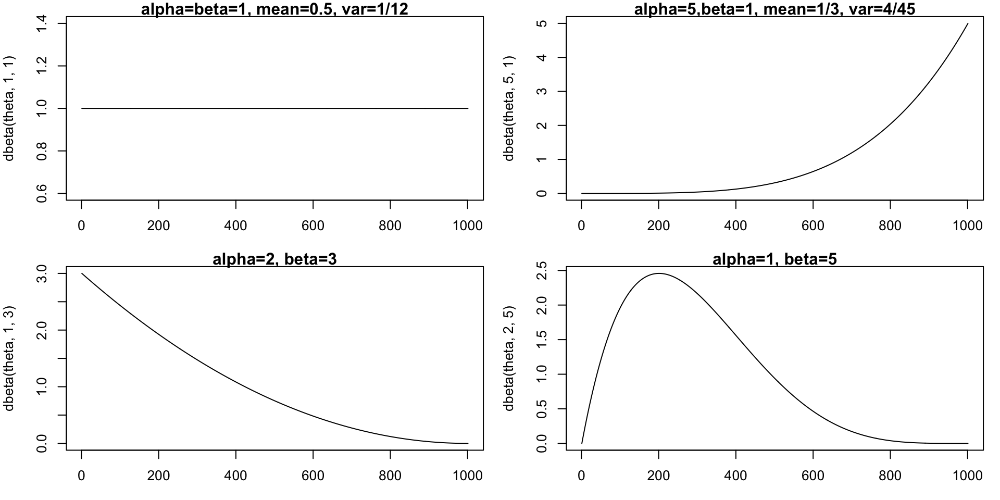
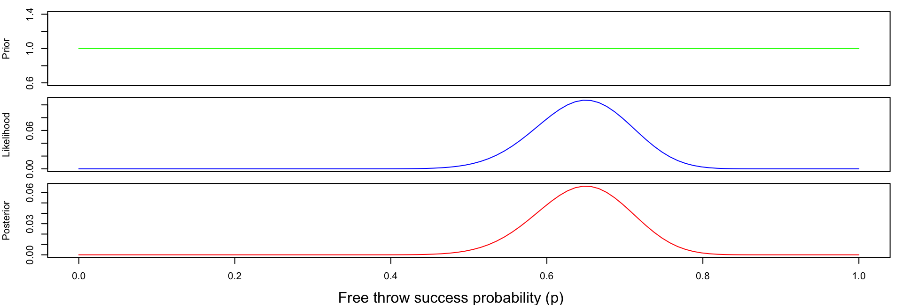
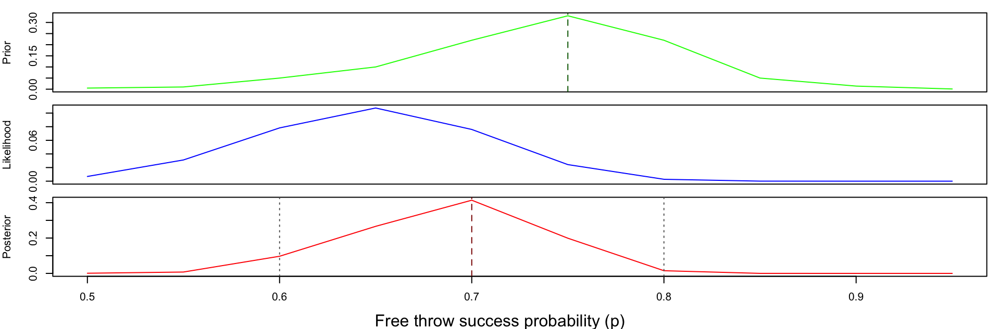
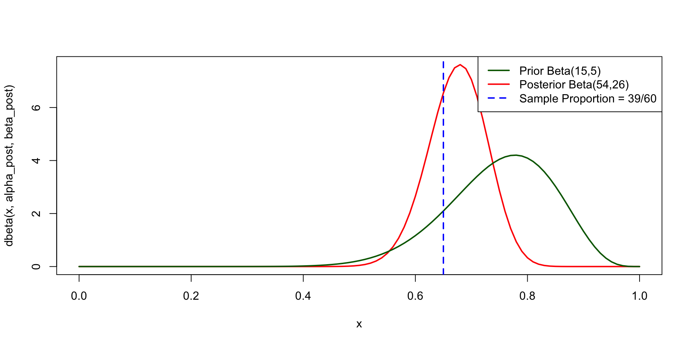
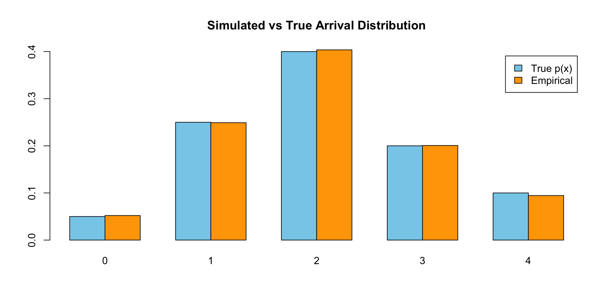
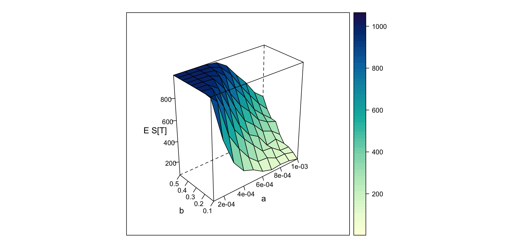

theta <- seq(0,1, by=0.001)
par(mfrow=c(2,2), mar=c(3,4,1,1))
plot(dbeta(theta, 1, 1),type="l", main="alpha=beta=1, mean=0.5, var=1/12")
plot(dbeta(theta, 5, 1),type="l", main="alpha=5,beta=1, mean=1/3, var=4/45")
plot(dbeta(theta, 1, 3),type="l",main="alpha=2, beta=3")
plot(dbeta(theta, 2, 5),type="l",main="alpha=1, beta=5")STAT2005 Computer Simulation
Lecture 4 — Simulation of Discrete Random Variables
Sam Wiwatanapataphee (275287a@curtin.edu.au)
12 Mar 2026
Goals today
- Part 1: Statistical Inference (continue)
- Review: Binomial and Beta Distributions
- Classical Inference for Proportions
- Alternative Classical Methods for Proportion Inference
- Bayesian Inference about a Population Proportion
- Types of Priors
- Non-informative
- Expert Priors (Informative Priors)
- Conjugate Priors
- Part 2: Simulation of Discrete Random Variables
- The precision method
- Discrete inverse CDF method
- Case study: Epidemic SIR Modelling
Part 1: Statistical Inference (continue)
Binomial and Beta Distributions
When we observe \(y\) successes and \((n-y)\) failures in an experiment, we use a discrete Binomial pmf to estimate the probability of success \(\theta, 0 \leq \theta \leq 1,\) that is
\[ Y \sim \text{Binomial}(n, \theta) \]
such that
\[ p(y \mid \theta) = C_y^n\theta^y (1-\theta)^{n-y}, \quad y = 0, 1, \dots, n. \]
We know that
\[ E(Y \mid \theta) = n\theta, \quad \text{Var}(Y\mid\theta) = n\theta(1-\theta). \]
The beta distribution is a family of continuous distributions on the interval \([0,1],\) It has two positive shape parameters, \(\alpha\) and \(\beta\), which act as exponents and determine the distribution’s shape. Its pdf is
\[ \theta \sim \text{Beta}(\alpha,\beta) \]
such that
\[ p(\theta) = \frac{\Gamma(\alpha+\beta)}{\Gamma(\alpha)\Gamma(\beta)}\theta^{\alpha-1}(1-\theta)^{\beta-1}, \quad \alpha,\beta > 0, \quad 0\leq\theta\leq 1. \]
The mean and variance are
\[ E(\theta) = \frac{\alpha}{\alpha+\beta}, \quad \text{Var}(\theta)=\frac{\alpha\beta}{(\alpha+\beta)^2(\alpha+\beta+1)} \]
Beta Distributions

Classical Inference for Proportions
Classical inference for a binomial proportion is often presented as simple, but the usual methods perform poorly, especially when \(y=0\) or \(y=n.\) For a binomial model
\[ Y \sim \text{Binomial}(n,p), \]
the classical estimator is
\[ \hat{p} = \frac{y}{n}. \]
A common large-sample \(95\%\) confidence interval uses the normal approximation:
\[ \hat{p} \pm 1.96 \sqrt{\frac{\hat{p}(1-\hat{p})}{n}}. \]
This relies on the central limit theorem, which requires large \(n\) so that
\[ Y \approx \text{Normal}\big(np,\; np(1-p)\big), \qquad \hat{p} \approx \text{Normal}\!\left(p,\; \frac{p(1-p)}{n}\right). \]
In practice, the approximation may be poor for finite samples.
A common rule of thumb is to use the interval only when
\[ np > 5 \quad \text{and} \quad n(1-p) > 5, \]
but this depends on the unknown \(p\) rather than the estimate \(\hat{p}\).
Thus, even from a classical perspective, the standard normal-approximation interval has several limitations.
Alternative Classical Methods for Proportion Inference
Classical inference typically substitutes \(\hat{p}\) for the unknown proportion \(p\) without adjusting for the uncertainty introduced by estimation. This can lead to poor performance, especially in small samples.
Over the years, more than twenty alternative classical intervals have been proposed, and there is still no consensus on a single preferred method. One widely used improvement is the Agresti–Coull interval.
Agresti–Coull Adjustment
Define the adjusted estimator
\[ \tilde{p} = \frac{y + 2}{n + 4}. \]
A \(95\%\) confidence interval is then
\[ \tilde{p} \pm 1.96 \sqrt{\frac{\tilde{p}(1 - \tilde{p})}{\,n + 4\,}}. \]
This method effectively adds two successes and two failures to the data, which is analogous to using a \(\text{Beta}(3,3)\) prior in a Bayesian framework.
Bayesian Inference about a Population Proportion
- A common inference problem is estimating a population proportion based on the number of successes and failures observed in a binomial sample.
- The posterior distribution represents our updated uncertainty about the proportion after combining:
- the observed data (likelihood), and
- prior beliefs about the parameter.
- More formally: \(\qquad \qquad \qquad \qquad \qquad \; P(\theta \mid \text{data}) \propto P(\text{data} \mid \theta)\,P(\theta).\)
Choosing a Prior
When specifying a prior, we ask:
- Do we have prior knowledge about the parameter?
- How strong should that prior information be?
- What distribution appropriately represents those beliefs?
Types of Priors
Conjugate
chosen so the posterior has the same distributional family as the prior
Non-informative
represent minimal prior knowledge
Informative
incorporate expert knowledge or previous studies
- Other common prior categories include weakly informative priors, hierarchical priors, and improper priors.
🏀 Example: Basketball
Suppose we want to learn about the true free‑throw success rate \(p\) of a professional basketball player.
- When we watch a game and record the number of made and missed free throws, we collect information about the player’s underlying success rate \(p.\)
- Assuming each free throw is independent and has the same probability of success \(p,\) the number of made shots \(Y\) can be modelled with a binomial distribution:
\[ Y \mid p \sim \text{Binomial}(n, p). \]
- Suppose we observe the player taking 60 free throws, of which 39 are made and 21 are missed. So:
\[ n = 60, \quad y = 39, \quad (n-y) = 21. \]
The binomial likelihood is
\[ P(Y= 39 \mid p) = C_{39}^{60} p^{39} (1-p)^{21}. \]
- This observed data will allow us to update our beliefs about the player’s true free‑throw percentage.
What prior should we choose for \(p?\)
Non-informative (Flat) Priors
- Non-informative priors aim to have minimal influence on the posterior relative to the likelihood.
- They attempt to represent prior ignorance or neutrality about the parameter.
- Uniform or flat prior, where all parameter values equally likely: \(p \sim \text{Uniform(0,1)}.\)
🏀 Example: Basketball with Uniform or flat prior
- Suppose we know nothing about the player or what his shooting percentage might be.
- A simple choice is a uniform prior, where every value of \(p\) between 0 and 1 is considered equally likely.
Code
p <- seq(0, 1, length = 100)
prior <- rep(1, length(p))
likelihood <- dbinom(39, 60, p)
norm <- sum(prior * likelihood) # normalising constant
posterior <- prior * likelihood / norm
par(mfrow = c(3,1),
mar = c(0,4,1,1), # remove bottom margin
oma = c(4,0,0,0)) # outer margin for shared x-label
plot(p, prior, type="l", xaxt="n", ylab="Prior", col="green")
plot(p, likelihood, type="l", xaxt="n", ylab="Likelihood", col="blue")
plot(p, posterior, type="l", ylab="Posterior", xlab="p", col="red")
mtext("Free throw success probability (p)", side=1, outer=TRUE, line=3)
Informative Priors
- In many situations we have prior knowledge or expert beliefs about the parameter \(p.\)
🏀 Example: Basketball with Informative Prior
- Professional players typically make between 50% and 95% of their free throws.
- Based on a basketball expert’s knowledge, we have the following discrete prior.
| Free Throw Probability (p) | 0.50 | 0.55 | 0.60 | 0.65 | 0.70 | 0.75 | 0.80 | 0.85 | 0.90 | 0.95 |
|---|---|---|---|---|---|---|---|---|---|---|
| Prior Probability | 0.005 | 0.01 | 0.05 | 0.10 | 0.22 | 0.33 | 0.22 | 0.05 | 0.014 | 0.001 |
Code
p <- seq(0.5, 0.95, length = 10)
prior <- c(0.005, 0.01, 0.05, 0.1, 0.22, 0.33, 0.22, 0.05, 0.014, 0.001) # given by an expert
likelihood <- dbinom(39, 60, p)
norm <- sum(prior * likelihood) # normalising constant from the law of total probability
posterior <- prior * likelihood / norm
# Prior summaries
prior_mode <- p[which.max(prior)]
prior_mean <- sum(p * prior)
# Posterior summaries
posterior_mode <- p[which.max(posterior)] # MAP estimate on this grid
posterior_mean <- sum(p * posterior)
# 98% equal-tail credible interval on the discrete grid
post_cdf <- cumsum(posterior)
lower_98 <- p[min(which(post_cdf >= 0.01))]
upper_98 <- p[min(which(post_cdf >= 0.99))]
# Plot
par(mfrow = c(3,1),
mar = c(0,4,1,1), # remove bottom margin
oma = c(4,0,0,0)) # outer margin for shared x-label
plot(p, prior, type="l", xaxt="n", ylab="Prior", col="green")
abline(v = prior_mode, lty = 2, col = "darkgreen")
plot(p, likelihood, type="l", xaxt="n", ylab="Likelihood", col="blue")
plot(p, posterior, type="l", ylab="Posterior", xlab="p", col="red")
abline(v = posterior_mode, lty = 2, col = "darkred")
abline(v = c(lower_98, upper_98), lty = 3, col = "gray40")
mtext("Free throw success probability (p)", side=1, outer=TRUE, line=3)
Informative Priors (continue)
# Prior summaries
prior_mode <- p[which.max(prior)] # p where the largest prior probability occurs at
prior_mean <- sum(p * prior)
# Posterior summaries
posterior_mode <- p[which.max(posterior)]
posterior_mean <- sum(p * posterior)
# 98% equal-tail credible interval on the discrete grid
post_cdf <- cumsum(posterior) # cumulative posterior
lower_98 <- p[min(which(post_cdf >= 0.01))] # find the first value where CDF exceeds 0.01
upper_98 <- p[min(which(post_cdf >= 0.99))] # find the first value where CDF exceeds 0.99- The posterior mode (also called the MAP estimate) is the value of \(p\) with the largest posterior probability.
- The new expert prior has inflated the maximum posterior estimate to be 0.7.
- Given the data and the prior, there is 98% posterior probability that the true free-throw success rate \(p\) lies within this interval.
Beta-Binomial Conjugate Prior
- In practice, the possible values for a population proportion \(p\) will usually be on a continuous scale in the region \((0,1).\)
- Naturally, Bayes’ rule also applies to continuous distributions.
- In this case, we can use Beta distribution for a prior distribution for \(p.\)
\[ p \sim \text{Beta}(\alpha,\beta), \]
with density
\[ f(p)=\frac{\Gamma(\alpha+\beta)}{\Gamma(\alpha)\Gamma(\beta)}p^{\alpha-1}(1-p)^{\beta-1}, \quad \alpha,\beta > 0, \quad 0\leq p\leq 1. \]
- The Beta distribution is flexible and can be interpreted as follows:
- \(\alpha - 1\) acts like prior successes,
- \(\beta - 1\) acts like prior failures,
- the prior mean is \(E[p] = \dfrac{\alpha}{\alpha+\beta},\) and
- its mode is \(\text{Mode}(t)=\dfrac{\alpha-1}{\alpha+\beta-2}, \alpha, \beta > 1.\)
- Now, what would be an appropriate value for parameter \(\alpha\) and \(\beta?\)
🏀 Example: Basketball with a Beta-Binomial Conjugate Prior
Suppose expert knowledge suggests this player is probably around a 75% free-throw shooter, and that this belief is worth about 20 prior shots.
A convenient prior is \(\qquad \qquad \qquad \qquad p \sim \text{Beta}(15,5).\)
This prior has \(\qquad \qquad E[p] = \dfrac{15}{20} = 0.75, \qquad \text{Mode}(p) = \dfrac{14}{18} \approx 0.778.\)
Using Bayes’ theorem and substituting the Binomial likelihood and Beta prior,
\[ \begin{aligned} f(p\mid x) &\propto P(X=x\mid p)\,f(p) \\ &\propto p^{39}(1-p)^{21}\cdot p^{15-1}(1-p)^{5-1} \\ &\propto p^{53}(1-p)^{25} \end{aligned} \]
So the posterior is \(\qquad \qquad \;\; p\mid x \sim \text{Beta}(15+39,5+21)=\text{Beta}(54,26).\)
The posterior mean and mode are
\[ E[p\mid x]=\frac{54}{54+26}=\frac{54}{80}=0.675, \qquad \text{Mode}(p)=\frac{54-1}{54+26-2}=\frac{53}{78}\approx 0.679. \]
For comparison, the sample proportion is \(\quad\hat p=\dfrac{39}{60}=0.65.\)
So the prior has pulled the inference upward slightly, from 0.65 toward the expert belief of 0.75.
🏀 Example: Basketball with a Beta-Binomial Conjugate Prior (continue)
n <- 60; x <- 39 # data
alpha <- 15; beta <- 5 # prior
alpha_post <- alpha + x # posterior
beta_post <- beta + (n - x)
# Summaries
prior_mean <- alpha / (alpha + beta)
prior_mode <- (alpha - 1) / (alpha + beta - 2)
post_mean <- alpha_post / (alpha_post + beta_post)
post_mode <- (alpha_post - 1) / (alpha_post + beta_post - 2)
# 95% credible interval
ci_95 <- qbeta(c(0.025, 0.975), alpha_post, beta_post)
cat("Prior: Beta(", alpha, ", ", beta, "), Mean = ", round(prior_mean, 3),
", Mode = ", round(prior_mode, 3), sep = "")Prior: Beta(15, 5), Mean = 0.75, Mode = 0.778Posterior: Beta(54, 26), Mean = 0.675, Mode = 0.67995% credible interval = (0.569, 0.773)curve(dbeta(x, alpha_post, beta_post), from = 0, to = 1, col = "red", lwd = 2)
curve(dbeta(x, alpha, beta), from = 0, to = 1,
col = "darkgreen", lwd = 2, ylab = "Density", xlab = "p",
main = "Beta-Binomial Basketball Example", add = TRUE)
abline(v = x / n, col = "blue", lty = 2, lwd = 2)
legend("topright",
legend = c("Prior Beta(15,5)", "Posterior Beta(54,26)", "Sample Proportion = 39/60"),
col = c("darkgreen", "red", "blue"), lwd = c(2, 2, 2), lty = c(1, 1, 2))
Posterior Mean Estimates: Bayesian Beta-Binomial
- Bayesians like to use the posterior mean as a point estimate. The posterior mean in this case is
\[ \hat{p} = E(p\mid y) = \frac{\alpha}{\alpha + \beta} = \frac{y+a}{n+a+b}. \]
- This is actually a weighted average of the MLE estimate and the prior mean. Recall:
\[ \hat{p}_{MLE} = \frac{y}{n}, \qquad E[p] = \frac{a}{a+b}. \]
Then, the posterior mean can be expressed as
\[ \hat{p} = \frac{y+a}{n+a+b} = \frac{n}{n+a+b}\frac{y}{n} + \frac{a+b}{n+a+b}\frac{a}{a+b}. \]
This suggests the posterior mean estimate will ALWAYS be between the MLE and the prior mean.
Part 2 Simulation of Discrete Random Variables
Precision Method
The precision method is simple and widely used for simulating discrete distributions with a small number of possible outcomes. Its main advantages are:
- Conceptually straightforward
- Easy to implement
- Works for any discrete distribution
However, when the number of outcomes becomes very large, more efficient algorithms may be required.
Suppose \(X\) is a discrete random variable that can take values
\[ x_1, x_2, \ldots, x_k \]
with corresponding probabilities
\[ P(X=x_i)=p_i, \qquad i=1,2,\ldots,k, \]
where
\[ p_i \ge 0, \qquad \sum_{i=1}^{k} p_i = 1. \]
Our goal is to generate simulated values of \(X\) so that the outcomes occur with exactly these probabilities.
Precision Method (continue)
The precision method works by partitioning the unit interval \((0,1)\) into segments whose lengths correspond to the probabilities \(p_1, p_2, \ldots, p_k\). Define the cumulative probabilities
\[ F(x_i) = \sum_{j=1}^{i} p_j, \qquad i=1,\ldots,k. \]
These cumulative values divide the interval \((0,1)\) into \(k\) subintervals:
\[ (0, F(x_1)],\quad (F(x_1), F(x_2)],\quad \ldots,\quad (F(x_{k-1}), F(x_k)]. \]
Because \(F(x_k)=1\), these intervals cover the entire unit interval.
The simulation procedure is then straightforward:
- Generate a random number \(U \sim \text{Uniform}(0,1)\).
- Determine which interval contains \(U\).
- Return the corresponding value of \(X\):
\[ X = \begin{cases} x_1 & \text{if } 0 < U \le F(x_1) \\ x_2 & \text{if } F(x_1) < U \le F(x_2) \\ \vdots \\ x_k & \text{if } F(x_{k-1}) < U \le 1 \end{cases} \]
This method guarantees that the probability of selecting \(x_i\) is exactly \(p_i\).
Precision Method Algorithm
The precision method can be implemented using the following steps.
- Specify the possible values \(x_1,\ldots,x_k\) and their probabilities \(p_1,\ldots,p_k\).
- Compute the cumulative probabilities \(F(x_i)\).
- Generate a random number \(U \sim \text{Uniform}(0,1)\).
- Find the smallest \(i\) such that \(U \le F(x_i).\)
- Output \(X = x_i\).
Example: Rolling a Loaded Die
Suppose a die has the following probabilities:
| Outcome \(x\) | 1 | 2 | 3 | 4 | 5 | 6 |
|---|---|---|---|---|---|---|
| \(P(X=x)\) | 0.10 | 0.15 | 0.20 | 0.25 | 0.20 | 0.10 |
First compute the cumulative distribution:
| Outcome \(x\) | 1 | 2 | 3 | 4 | 5 | 6 |
|---|---|---|---|---|---|---|
| \(P(X=x)\) | 0.10 | 0.15 | 0.20 | 0.25 | 0.20 | 0.10 |
| \(F(x)\) | 0.10 | 0.25 | 0.45 | 0.70 | 0.90 | 1.00 |
This corresponds to the following intervals:
| Interval | Outcome |
|---|---|
| \(0 < U \le 0.10\) | 1 |
| \(0.10 < U \le 0.25\) | 2 |
| \(0.25 < U \le 0.45\) | 3 |
| Interval | Outcome |
|---|---|
| \(0.45 < U \le 0.70\) | 4 |
| \(0.70 < U \le 0.90\) | 5 |
| \(0.90 < U \le 1.00\) | 6 |
For example:
- If \(U = 0.18\), then \(X=2\).
- If \(U = 0.63\), then \(X=4\).
- If \(U = 0.92\), then \(X=6\).
[1] 5 4 5 6 4 3 4 3 2 4samples
1 2 3 4 5 6
0.0958 0.1471 0.1998 0.2526 0.2035 0.1012 - In this way, the precision method provides a clear and reliable foundation for simulating any discrete random variable.
Inverse CDF method
Inverse transform sampling provides a systematic way to turn Uniform(0,1) draws into samples from any distribution with a known CDF. The method forms the foundation for many simulation methods. It works whenever the inverse CDF is available in closed form.Otherwise, alternatives are needed when \(F_X^{-1}\) is not explicit.
Based on the probability integral transform: if \(X\) has CDF \(F_X\), then \(F_X(X)\sim \text{Uniform}(0,1)\).
Inverse transform sampling reverses this: apply \(F_X^{-1}\) to a Uniform(0,1) value to obtain a draw from \(F_X\).
Algorithm: 1. Generate \(U \sim \text{Uniform}(0,1). \qquad\) 2. Set \(X = F_X^{-1}(U). \qquad\) 3. Then \(X\) has CDF \(F_X\).
| Feature | Precision Method | Inverse CDF Method |
|---|---|---|
| Type of distribution | Discrete | Continuous (or discrete with closed‑form inverse) |
| Core idea | Interval search on cumulative probabilities | Apply \(F^{-1}(U)\) directly |
| Requires closed‑form inverse? | No | Yes |
| Implementation | cumsum() + find interval |
Compute \(F^{-1}(U)\) |
| When useful | Any discrete pmf, tables, empirical distributions | Distributions with analytic inverse CDF |
| Conceptual relationship | Discrete version of inverse CDF | General inverse transform principle |
Example: Simulating Customer Arrivals at a Service Desk
A small service desk receives customers according to the following empirical distribution, estimated from past data:
| Number of arrivals in a 5‑minute interval | 0 | 1 | 2 | 3 | 4 |
|---|---|---|---|---|---|
| Probability | 0.05 | 0.25 | 0.40 | 0.20 | 0.10 |
Management wants to simulate one hour of operation (12 intervals of 5 minutes) to understand typical workload patterns. Use the discrete inverse CDF (precision) method to generate arrivals in each interval.
x <- 0:4 # support
p <- c(0.05, 0.25, 0.40, 0.20, 0.10) # probabilities
F <- cumsum(p) # Cumulative distribution
# Discrete inverse CDF sampler
r_arrivals <- function(n = 1) {
u <- runif(n) # random uniform(0,1)
x[ findInterval(u, F) + 1 ]
}
# Simulate 12 intervals (1 hour)
arrivals <- r_arrivals(12); arrivals [1] 3 2 2 3 1 1 3 3 2 1 0 3[1] 24- Function
findInterval(u,F)finds which cumulative‑probability interval \(u\) falls into. x[... +1]converts the interval index into the actual arrival count (0,1,2,3,4).
# Empirical check with a large simulation
set.seed(123)
samples <- r_arrivals(10000)
empirical <- table(samples) / 10000
barplot(rbind(p, empirical), names.arg = x,
beside = TRUE, col = c("skyblue", "orange"),
legend.text = c("True p(x)", "Empirical"),
main = "Simulated vs True Arrival Distribution")
With 10,000 samples, the empirical distribution closely matches the target distribution—demonstrating that the discrete inverse CDF method works exactly as intended.
🦠 Case study: Epidemic SIR Modelling
SIR stands for Susceptible, Infected, and Removed. Individuals can be one of three types:
Susceptible
if they have not yet caught the disease
Infected
if they currently have the disease
Removed
if they have had the disease and have since recovered (and are now immune) or died.
Let \(S(t), I(t)\) and \(R(t)\) be the number of susceptible, infected and removed individuals at time t.
At each time step, each infected has probability \(\alpha\) of infecting each susceptible. (This assumes that each infected has equal contact with all susceptibles. This is called a mixing assumption.)
At the end of each time step, after having had a chance to infect people, each infected has probability of \(\beta\) being removed.
SIRsim <- function(a, b, N, T) {
# a is infection rate, b is removal rate
# N initial susceptibles, 1 initial infected, simulation length T
# returns a matrix size (T+1)*3 with columns S, I, R respectively
S <- rep(0, T+1); I <- rep(0, T+1); R <- rep(0, T+1)
S[1] <- N; I[1] <- 1; R[1] <- 0
for (i in 1:T) {
S[i+1] <- rbinom(1, S[i], (1 - a)^I[i])
R[i+1] <- R[i] + rbinom(1, I[i], b)
I[i+1] <- N + 1 - R[i+1] - S[i+1]
}
return(matrix(c(S, I, R), ncol = 3))
}Plot \(S(t), I(t), R(t)\) for four separate simulations, with \(\alpha = 0.0005\) and \(\beta = 0.1, 0.2, 0.3,\) and \(0.4.\)
- As β increases, infected individuals recover faster.
- Faster recovery means less time spent infectious, so fewer secondary infections occur. Therefore:
- The peak of \(I(t)\) becomes lower.
- The epidemic ends sooner.
- The final number of susceptibles \(S(T)\) is higher.
- The epidemic size decreases.
The main aim is to estimate \(E[S(T)]\), average epidemic size, for different values of \(\alpha\) and \(\beta\) to see how it varies.
Code
SIR <- function(a, b, N, T) {
# simulates SIR epidemic model from time 0 to T
# returns number of susceptibles, infected and removed at time T
S <- N
I <- 1
R <- 0
for (i in 1:T) {
S <- rbinom(1, S, (1 - a)^I)
R <- R + rbinom(1, I, b)
I <- N + 1 - S - R
}
return(c(S, I, R))
}
# set parameter values
N <- 1000
T <- 100
a <- seq(0.0001, 0.001, by = 0.0001)
b <- seq(0.1, 0.5, by = 0.05)
n.reps <- 400 # sample size for estimating E S[T]
f.name <- "SIR_grid.dat" # file to save simulation results
# estimate E S[T] for each combination of a and b
write(c("a", "b", "S_T"), file = f.name, ncolumns = 3)
for (i in 1:length(a)) {
for (j in 1:length(b)) {
S.sum <- 0
for (k in 1:n.reps) {
S.sum <- S.sum + SIR(a[i], b[j], N, T)[1]
}
write(c(a[i], b[j], S.sum/n.reps), file = f.name,
ncolumns = 3, append = TRUE)
}
}
# plot estimates in 3D
g <- read.table(f.name, header = TRUE)
library(lattice)
print(wireframe(S_T ~ a*b, data = g, scales = list(arrows = FALSE),
aspect = c(.5, 1), drape = TRUE,
xlab = "a", ylab = "b", zlab = "E S[T]"))
The 3D plot shows how the expected epidemic size depends jointly on infection probability and recovery probability: epidemics grow larger when α is high and β is low, and shrink when α is low and β is high.